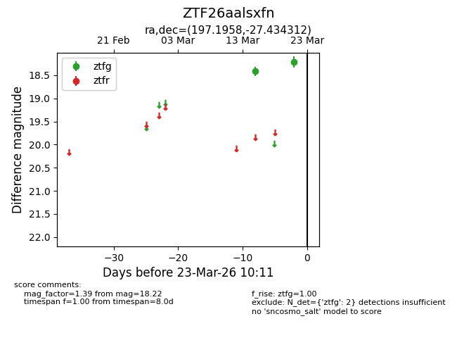
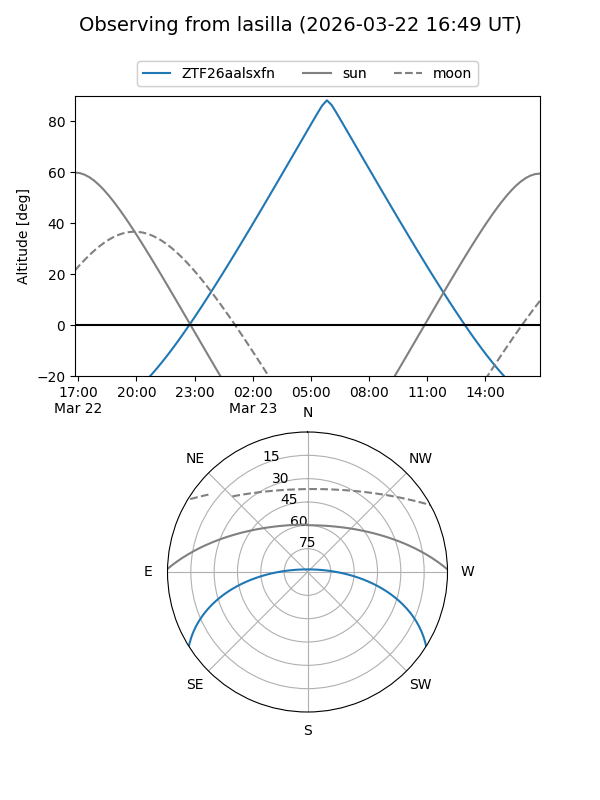
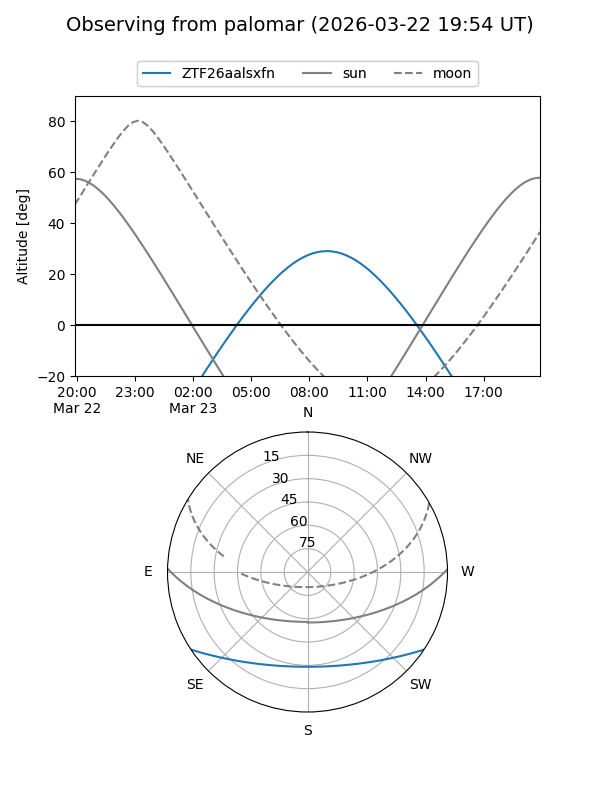

ZTF26aalsxfn
Target ZTF26aalsxfn at 2026-03-23 10:13
Aliases and brokers:
FINK: link
Lasair: link
ALeRCE: link
alt names
ZTF26aalsxfn (ztf,fink_ztf)
Coordinates:
equatorial (ra, dec) = 197.1958,-27.43431
equatorial (HMS+DMS) = 13:08:47.00,-27:26:03.52
galactic (l, b) = (307.6472,+35.27858)
Flags:
Photometry:
last ztfg=18.22
2 ztfg detections
Lightcurve

Visibility


Additional plots